Меню XMB™ > Использование клавиатуры
Использование клавиатуры
Клавиатура отображается автоматически, когда необходимо ввести текст. Данные инструкции предусматривают использование клавиатуры с русской раскладкой. Для получения информации об использовании других языков клавиатуры см. руководство пользователя для соответствующего языка.
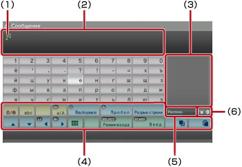
(1) |
Курсор |
|---|---|
(2) |
Поле ввода текста |
(3) |
Отображение параметров предиктивного режима |
(4) |
Функциональные клавиши |
(5) |
Отображается, когда включен предиктивный режим |
(6) |
Отображение режима ввода |
Список клавиш
Отображаемые клавиши могут различаться в зависимости от режима ввода и других условий.
 |
Служит для вставки символа или значка эмоции |
|---|---|
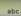 /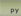 / / / 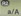 |
Переключение типа вводимых символов |
| Перемещение курсора | |
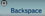 |
Удаление символов слева от курсора |
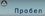 |
Пробел |
| Разрыв строки | |
 / /  |
Копирование и вставка текста |
 |
Переключение на миниатюрную клавиатуру |
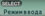 |
Переключение режима ввода |
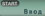 |
Подтверждение введенных символов/выход из режима клавиатуры |
Ввод символов
При использовании предиктивного режима можно ввести несколько первых букв слова, после чего отобразится список наиболее часто используемых слов, которые начинаются с этих букв. Далее с помощью кнопок со стрелками можно выбрать нужное слово. После завершения ввода текста нажмите клавишу "Ввод" для выхода из режима клавиатуры.
Подсказки
- В некоторых режимах ввода невозможно использовать значки эмоций.
- Языки, которые можно использовать для ввода текста, являются поддерживаемыми системой языками. Например, если в качестве языка системы задан французский язык, можно ввести текст на французском языке. Язык системы можно установить, выбрав
 (Настройки) >
(Настройки) >  (Настройки системы) > [Язык системы].
(Настройки системы) > [Язык системы]. - Чтобы очистить поле ввода, одновременно нажмите кнопки
 + L1.
+ L1.
Использование подключенной клавиатуры
Для ввода текста можно использовать клавиатуру USB или Bluetooth® (продаются отдельно). Если во время отображения экрана ввода текста нажать любую клавишу на подключенной клавиатуре, для ввода текста можно будет использовать подключенную клавиатуру.
Подсказки
- Подробнее о подключении клавиатуры Bluetooth® см. в разделе (Настройки) >
 (Настройки дополнительных устройств) > [Управление устройствами Bluetooth®] в данном Руководстве.
(Настройки дополнительных устройств) > [Управление устройствами Bluetooth®] в данном Руководстве. - При использовании подключенной клавиатуры нельзя использовать предиктивный режим.
- Для переноса строки в поле ввода текста нажмите ALT + ENTER. Перенести строку можно только в тех случаях, когда это применимо, например, при написании сообщения в разделе
 (Друзья).
(Друзья). - Чтобы очистить поле ввода, одновременно нажмите кнопки SHIFT + BACKSPACE.
- Чтобы вставить скопированный текст, нажмите Ctrl + V. Скопированный текст будет вставлен.
Использование мини-клавиатуры
При выборе значка в полном режиме клавиатуры окно будет переключено в режим мини-клавиатуры. В режиме мини-клавиатуры каждой клавише будут назначены несколько символов.
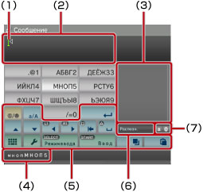
(1) |
Курсор |
|---|---|
(2) |
Поле ввода текста |
(3) |
Отображение параметров предиктивного режима |
(4) |
Отображение символов, которые можно вводить с помощью выбранной клавиши. 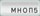 , затем четыре раза нажмите кнопку . Чтобы ввести [M5], нажмите кнопку , затем нажмите кнопку и после того, как будет введен символ [M], нажмите кнопку . Чтобы ввести [M5], нажмите кнопку , затем нажмите кнопку и после того, как будет введен символ [M], нажмите кнопку 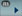 , чтобы поместить курсор после символа [M]. Затем нажмите кнопку и кнопку девять раз, чтобы ввести [5].
|
(5) |
Функциональные клавиши |
(6) |
Отображается, когда включен предиктивный режим |
(7) |
Отображение режима ввода |
Подсказка
Можно также использовать способ ввода текста одним нажатием. С помощью кнопки "Параметры" переключите способ ввода текста. При использовании ввода текста одним нажатием слова, которые можно создавать с помощью комбинации, состоящей из одной буквы (или цифры) на каждой выбранной клавише, отображаются как возможные термины. Например, при выборе клавиши "АБВГ2" слова, начинающиеся с букв "a", "б", "в", "г" или цифры "2", отображаются в списке окна возможных терминов справа от экранной клавиатуры. При появлении символа ">" продолжайте вводить буквы нужного вам термина до тех пор, пока не появятся варианты.
Список клавиш
Отображаемые клавиши могут различаться в зависимости от режима ввода и других условий.
 |
Ввод символа |
|---|---|
 |
Переключение между верхним и нижним регистром |
| Разрыв строки | |
| Перемещение курсора | |
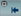 |
Удаление символа слева от курсора |
 |
Ввод пробела |
 / /  |
Копирование и вставка текста |
 |
Переключение в режим полной клавиатуры |
 |
Отображение меню параметров |
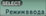 |
Переключение режима ввода |
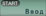 |
Подтверждение введенных символов/выход из режима клавиатуры |